家庭健康中心 · 使用说明（图文版）
一个面向家庭的健康数据管理应用：家庭成员共同记录血压/心率/血糖/体温/体重，
拍照自动识别血压计读数，异常自动预警，数据可导出留档。
配套文档：
docs/api.md（接口）、docs/database.md（数据库）、docs/aliyun-deployment.md（部署）、docs/user-manual.md（纯文字版手册）
目录
一、这是什么
它解决什么问题
| 痛点 | 本应用的做法 |
|---|---|
| 家里老人的血压计读数要手抄到本子上 | 拍照识别，自动读出收缩压/舒张压/脉搏 |
| 一家人各自的数据分散、互相不知道 | 家庭维度共享，成员各自记录、彼此可见 |
| 血压偏高时没人提醒 | 预警规则：超过阈值自动产生预警记录 |
| 复诊时医生说"把最近的数据给我" | 一键导出 CSV / JSON / Excel |
功能一览
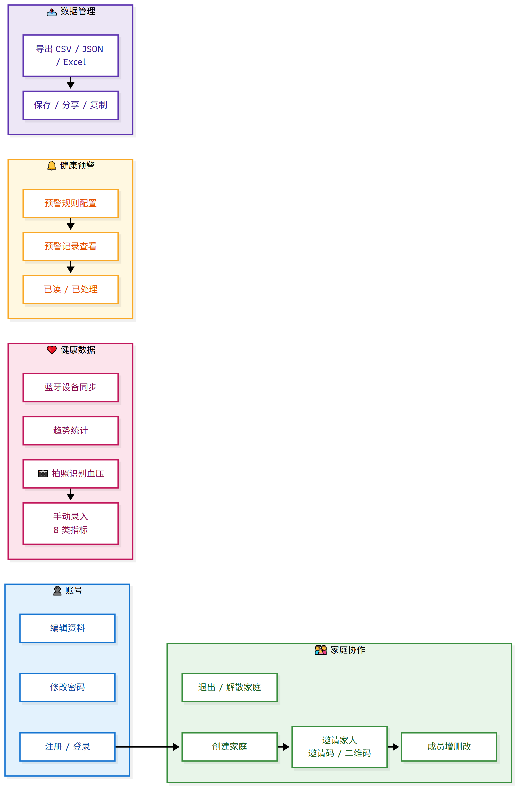
<sub>▲ 功能一览 （源文件 docs/diagrams/01-features.mmd）</sub>
二、系统架构
整体架构
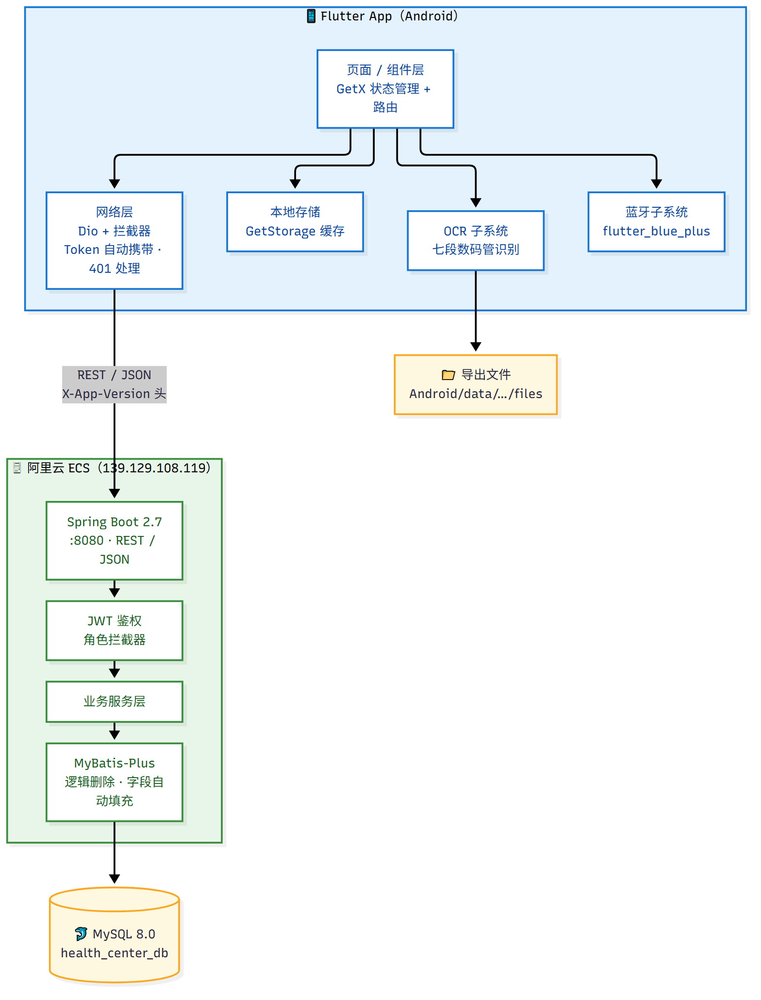
<sub>▲ 系统整体架构 （源文件 docs/diagrams/02-architecture.mmd）</sub>
技术栈
| 层 | 技术 | 版本 | 作用 |
|---|---|---|---|
| 客户端 | Flutter / Dart | 3.24.5 / 3.5.4 | 跨平台 UI |
| 状态管理 | GetX | — | 响应式状态 + 路由 + 依赖注入 |
| 屏幕适配 | flutter_screenutil | — | 设计稿等比缩放 |
| 图表 | fl_chart | — | 趋势统计 |
| 网络 | Dio | — | 拦截器统一处理 Token / 错误 |
| 本地存储 | GetStorage | — | 登录态、缓存 |
| 蓝牙 | flutter_blue_plus | — | BLE 心率设备 |
| 服务端 | Spring Boot | 2.7.18 | REST API |
| 持久层 | MyBatis-Plus | 3.5.5 | ORM + 逻辑删除 + 自动填充 |
| 鉴权 | JJWT | 0.12.3 | 无状态 Token |
| 数据库 | MySQL | 8.0.46 | 业务数据 |
| 开发态数据库 | H2（内存） | — | 本地免安装调试 |
三、角色与权限
重点：本项目有两套"角色"概念，容易混淆，务必区分。
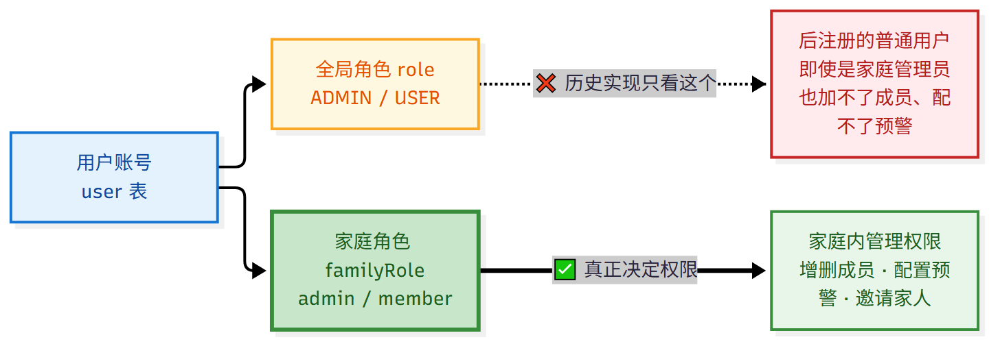
<sub>▲ 角色与权限关系 （源文件 docs/diagrams/03-roles.mmd）</sub>
| 能力 | 家庭管理员<br/>（familyRole=admin） | 普通成员<br/>（familyRole=member） |
|---|---|---|
| 查看家庭 / 成员列表 | ✅ | ✅ |
| 新增 / 编辑 / 删除家庭成员 | ✅ | ❌ |
| 配置预警规则 | ✅ | ❌ |
| 邀请家人（查看邀请码） | ✅ | ❌ |
| 退出家庭 | 需先转让或解散 | ✅ |
| 录入 / 查看健康数据 | ✅ | ✅ |
⚠️ 曾经的坑（已修）：权限判定一度只看全局
role，导致"后注册的普通用户即使自己建了家庭、是该家庭管理员，也加不了成员、配不了预警"。现已改为"全局 ADMIN 或 家庭管理员"任一满足即通过。
四、界面总览
| 首页 | 成员 | 健康 |
|---|---|---|
 |  |  |
| 健康分、家庭概览、今日待办 | 家庭成员卡片、角色/关系/年龄 | 健康数据列表、按成员/类型筛选 |
| 预警 | 我的 |
|---|---|
 |  |
| 预警记录、全部已读、规则入口 | 个人信息、家庭卡片、数据管理、设置 |
五、功能使用详解
5.1 注册与登录
| 登录 | 注册 |
|---|---|
 |  |
登录步骤
- 输入 11 位手机号
- 输入密码（可勾选「记住密码」，下次自动回填）
- 点「登录」
登录失败时会明确提示原因（如「手机号或密码错误」）。注意：早期版本输错密码界面毫无反应、还会清空手机号，原因是把业务 401 当成了"Token 过期"并跳转登录页 —— 现已修复。
注册步骤
- 登录页点「立即注册」
- 依次填写：手机号 → 验证码 → 密码 → 确认密码（昵称可选）
- 点「获取验证码」（开发模式下任意 6 位数字均可）
- 勾选协议后点「注册」→ 自动登录进入首页
⚠️ 上线前必须处理：当前后端未校验验证码（
UserServiceImpl中直接跳过），且没有发码接口。也就是说任何人可用任意 6 位数字注册任意手机号。需接入短信服务或明确改为免验证注册。
5.2 首页
- 健康分：综合近期数据的健康评分
- 家庭健康状况：家庭成员数、今日录入条数、异常预警条数
- 测试家庭卡片：家庭名、成员数、邀请码
- 点「查看全部」或成员头像可进入成员/健康详情
5.3 创建 / 加入家庭

| 操作 | 路径 | 说明 |
|---|---|---|
| 创建家庭 | 首页「创建或加入家庭」→「创建家庭」→ 输入家庭名 | 创建者自动成为家庭管理员 |
| 加入家庭 | 首页「创建或加入家庭」→「扫码加入」 | 扫家人分享的二维码 |
| 邀请家人 | 我的 →「邀请家人」 | 显示 6 位邀请码 + 二维码 |
邀请页会显示家庭名、成员数、邀请码（如 TEST01）与二维码，家人扫码或输入邀请码即可加入。
5.4 家庭成员管理
| 成员列表 | 编辑成员 |
|---|---|
|  |
添加成员：成员页右下角 ➕ → 填写姓名 / 性别 / 关系 / 角色 / 出生日期 → 保存
编辑 / 删除：点成员卡片右侧按钮 → 选择「编辑」或「删除」
可选关系：父亲、母亲、配偶、子女、丈夫、妻子、儿子、女儿、爷爷、奶奶、外公、外婆、其他
⚠️ 曾经的坑（已修）：成员增删改一度是假实现（只改内存、提示"成功"、服务端从未收到请求），重启 App 后改动全部消失。现已改为真实调用接口，并以服务端返回为准刷新列表。
5.5 录入健康数据
| 健康数据列表 | 添加记录 |
|---|---|
|  |
手动录入
- 健康页点右下角 ➕
- 选择成员与数据类型（血压 / 心率 / 血糖 / 体温 / 体重 / 身高 / 步数 / 睡眠）
- 填写数值（界面显示正常范围提示）
- 点「保存记录」
5.6 拍照识别血压（OCR）
| 识别方式选择 |
|---|
 |
操作：添加记录页 →「📷 拍照识别血压」→「拍照识别」或「从相册选择」→ 自动识别 → 弹窗确认 →「确认填充」
识别成功后弹窗会显示识别结果（如 血压: 120.0/80.0 mmHg，心率: 75.0 bpm），并可一键填入表单；识别结果可手动修改。
📖 识别原理与精度数据见 9.1 OCR 精度
5.7 健康预警
- 预警记录列表：按「全部 / 未读 / 待处理」筛选，可「全部已读」
- 预警规则：点右上角规则图标进入（可添加数据类型的阈值规则）
5.8 数据导出
| 导出配置 | 导出结果 |
|---|---|
 |  |
步骤
- 我的 →「数据导出」
- 查看统计（总记录数、时间范围、各类型条数）
- 选择导出格式（CSV / JSON / Excel）与时间范围（最近 7 天 / 30 天 / 3 个月 / 全部）
- 勾选要导出的数据类型
- 点「导出数据」→ 进入结果页
- 结果页可「保存到本地」「分享文件」「复制全部内容」
保存位置：/storage/emulated/0/Android/data/com.healthcenter.health_center_app/files/HealthExport/
5.9 个人中心与设置
| 我的 | 设置 | 修改密码 |
|---|---|---|
|  |  |
- 编辑资料：修改昵称、性别、生日、头像
- 修改密码：原密码 + 新密码 + 确认新密码（≥6 位）
- 设置：通知开关、测量提醒时间、隐私政策、清除缓存、版本信息
- 清除缓存：清理本地健康数据 / 日记 / 打卡 / 内容 / 预警记录缓存（不影响登录态与家庭成员）
六、核心流程图
6.1 登录鉴权流程
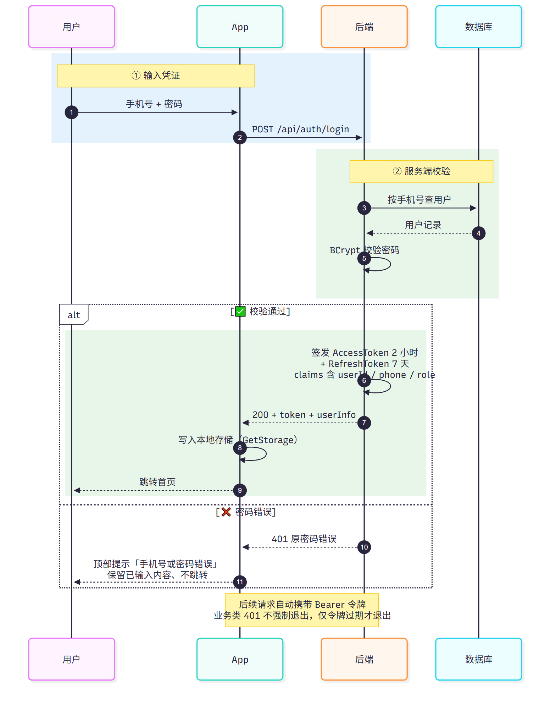
<sub>▲ 登录鉴权时序 （源文件 docs/diagrams/04-login-seq.mmd）</sub>
6.2 OCR 拍照识别流程
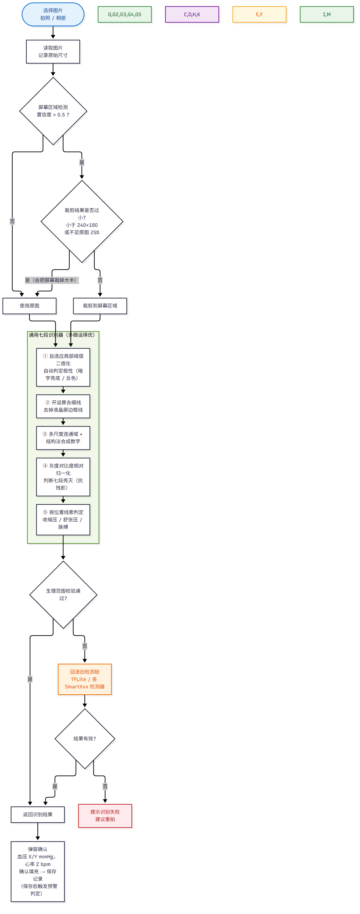
<sub>▲ OCR 拍照识别流程 （源文件 docs/diagrams/05-ocr-flow.mmd）</sub>
关键设计：多假设择优。二值化极性、开运算开关、膨胀半径、是否合并散段，全部作为独立假设分别尝试，最后按统一评分选最优结果，避免被单一假设绑死。
6.3 预警产生流程
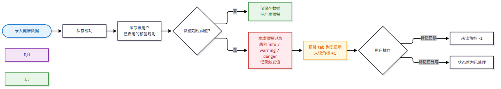
<sub>▲ 预警产生流程 （源文件 docs/diagrams/06-alert-flow.mmd）</sub>
6.4 家庭协作流程
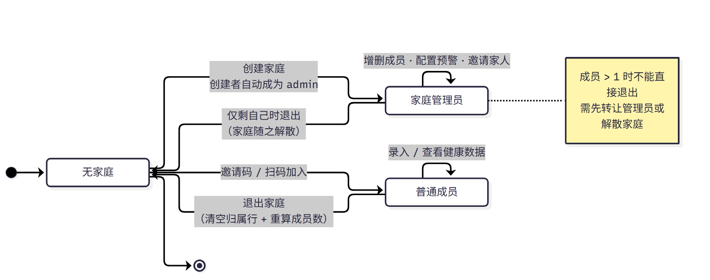
<sub>▲ 家庭协作状态流转 （源文件 docs/diagrams/07-family-state.mmd）</sub>
6.5 数据导出流程
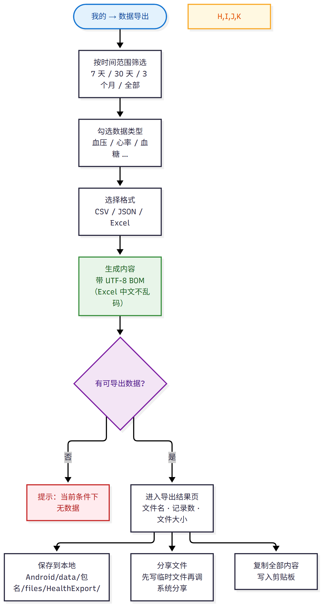
<sub>▲ 数据导出流程 （源文件 docs/diagrams/08-export-flow.mmd）</sub>
七、后端与数据库
7.1 分层结构
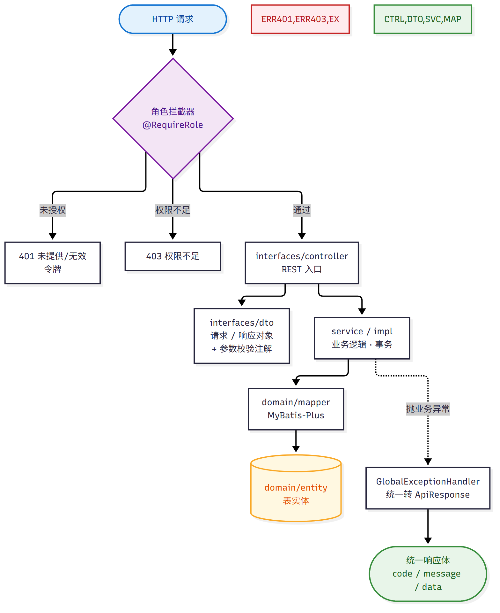
<sub>▲ 后端分层与请求链路 （源文件 docs/diagrams/09-backend-layers.mmd）</sub>
7.2 数据库关系
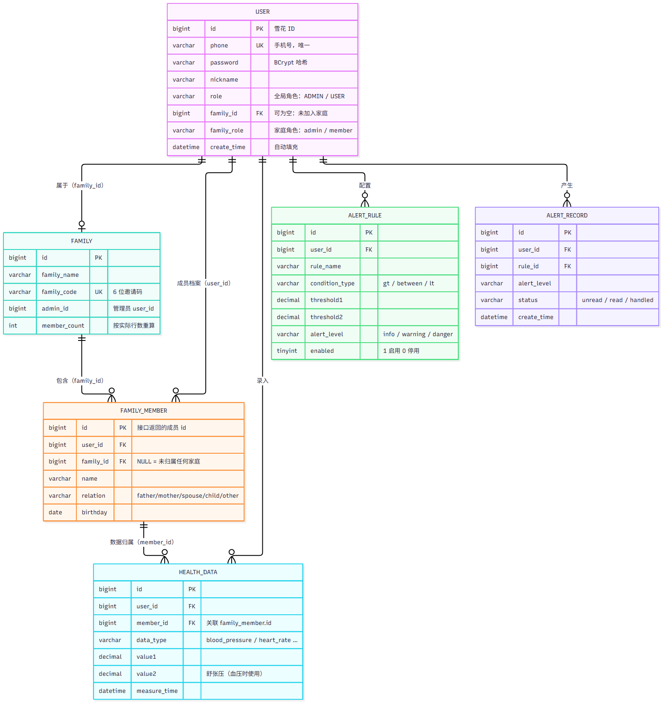
<sub>▲ 数据库关系（ER） （源文件 docs/diagrams/10-er.mmd）</sub>
7.3 主要接口
| 分类 | 接口 | 说明 |
|---|---|---|
| 认证 | POST /api/auth/register login refresh logout change-password | 注册/登录/刷新/登出/改密 |
| 用户 | GET /user/info、资料更新 | 个人信息 |
| 家庭 | POST /api/family/create join leave | 创建/加入/退出 |
| 家庭 | GET /api/family/my members qrcode info/{code} | 家庭信息/成员/二维码/邀请码解析 |
| 成员 | GET/POST /api/members、PUT/DELETE /api/members/{id} | 成员增删改查 |
| 健康 | GET/POST /api/health-data | 健康数据 |
| 预警 | GET/POST /api/alert-rules、PUT/DELETE /api/alert-rules/{id}、/{id}/toggle | 规则管理 |
| 预警 | GET /api/alert-records | 预警记录 |
八、部署与运维
8.1 部署拓扑
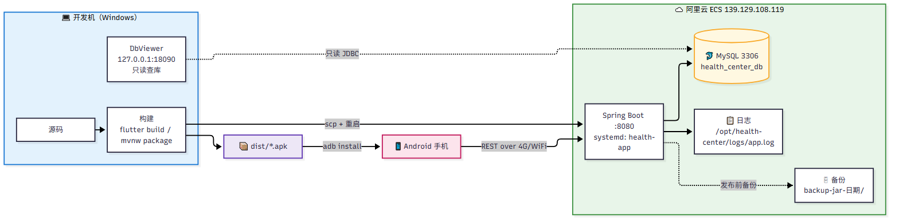
<sub>▲ 部署拓扑 （源文件 docs/diagrams/11-deploy.mmd）</sub>
8.2 发布流程
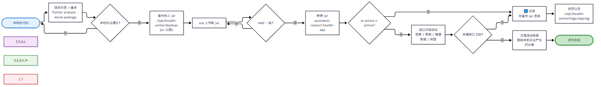
<sub>▲ 发布流程 （源文件 docs/diagrams/12-release.mmd）</sub>
常用运维命令
# 服务状态 / 重启
systemctl status health-app
systemctl restart health-app
# 看日志
tail -f /opt/health-center/logs/app.log
# 回滚
cp /opt/health-center/backup-jar-<时间>/health-center-backend-1.0.0.jar \
/opt/health-center/target/health-center-backend-1.0.0.jar
systemctl restart health-app8.3 本地调试（免装 MySQL）
# 用 H2 内存库启动后端（每次重启数据重置，适合测试）
java -jar spring-boot-backend/target/health-center-backend-1.0.0.jar --spring.profiles.active=dev
# 手机通过 USB 隧道访问本机后端
adb reverse tcp:8080 tcp:8080
# App 用 --dart-define=BASE_URL=http://127.0.0.1:8080 构建九、质量与验证
9.1 OCR 精度实测
方法：用程序生成真值已知的七段数码管图像（4 种液晶风格 × 12 组数值 × 4 档退化 = 192 张）， 跑真实检测代码逐张比对。基准工具在 flutter-app/tool/，可随时重跑回归。

| 指标 | 修复前（旧检测链） | 修复后（通用七段识别器） |
|---|---|---|
| 收缩压正确 | 0.5% | 100.0% |
| 舒张压正确 | 5.2% | 100.0% |
| 脉搏正确 | 3.1% | 100.0% |
| 三项全对 | 0.0% | 100.0% |
| 干净图（48 张） | 0.0% | 100% |
| 退化图（144 张） | 0.0% | 100% |
退化档位含：噪声、高斯模糊、亮度/对比度偏移、降采样、JPEG 压缩。
复现方式
cd flutter-app
dart run tool/ocr_bench.dart gen all # 生成数据集
dart run tool/ocr_bench_compare.dart tool/ocr_bench_data # 新旧链路对比
dart run tool/ocr_debug_one.dart tool/ocr_bench_data/s0_v0_clean.png --full # 单图诊断9.2 真机验证
在真机上用同一批图片复验，日志确认走的是新识别器：
[SevenSegment] 原始图像尺寸: 900x620
[SevenSegment] 尝试通用七段识别器...
[SevenSegment] ✓ 通用七段识别成功: 101/71, 73 bpm (置信度 0.92) ← 耗时约 1.4 秒
[OcrButton] 识别结果: isValid=true, systolic=101.0, diastolic=71.0, heartRate=73.0该图真值 101/71/73，识别结果完全一致。
9.3 已知限制
| 限制 | 说明 |
|---|---|
| 验证码未校验 | 后端跳过短信校验，上线前必须处理 |
| 健康内容为空 | health_content 表无数据，App 显示「内容服务暂未接入」 |
| 日记 / 提醒 / 设备为本地功能 | 后端无对应接口，换机不迁移 |
| 蓝牙同步 | 依赖设备广播，实测部分心率设备连上后收不到数据 |
| 复杂机身背景的识别 | 含外壳/反光/斜拍的严苛场景仍在迭代 |
十、故障排查
10.1 排查决策图
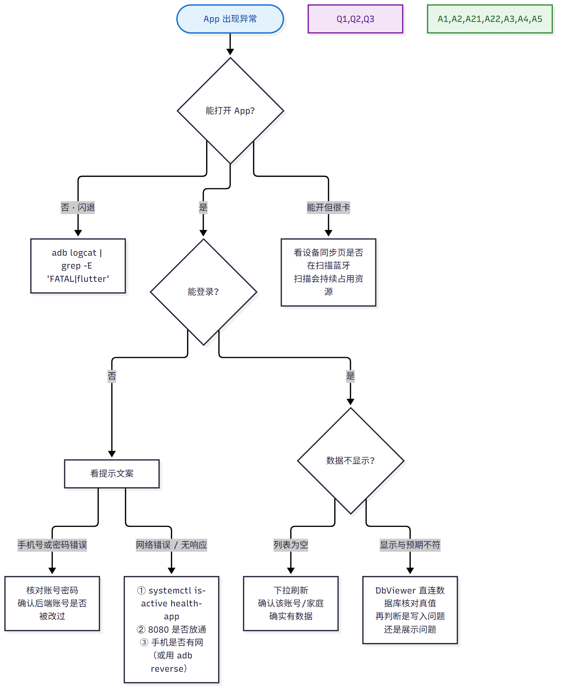
<sub>▲ 故障排查决策 （源文件 docs/diagrams/13-troubleshoot.mmd）</sub>
10.2 常见问题
| 现象 | 可能原因 | 处理 |
|---|---|---|
| 登录后停在登录页 | Token 未存 / 接口 401 | 查后端日志 用户登录成功，再看是否返回了 token |
| 成员列表为空但家庭有人 | 成员行 family_id 为空（历史孤儿行） | 属于已知历史数据问题，已修复新增路径 |
| 新增成员后看不到 | 早期 bug：未写 family_id | 已修复 |
| 拍照识别失败 | 图片过小 / 屏幕检测裁剪过度 | 已加裁剪保护；重拍更清晰的整屏照片 |
| 导出文件找不到 | Android 10+ 应用专用目录 | 路径见 App 内提示，或用「分享文件」转发 |
| 改密码输错原密码被踢下线 | 早期 bug：业务 401 被当作 Token 过期 | 已修复为排除 /api/auth/** |
| 清除缓存提示"已清除 0 条" | 本地缓存本就为空 | 正常现象 |
附录：目录结构
ReadHealthInfo/
├── flutter-app/ # 客户端
│ ├── lib/
│ │ ├── app/modules/ # 功能模块（GetX）
│ │ │ ├── login/ register/ # 登录注册
│ │ │ ├── home/ # 首页 + 5 个 tab 页
│ │ │ ├── members/ family/ # 成员与家庭
│ │ │ ├── health/ # 健康数据
│ │ │ ├── alerts/ # 预警
│ │ │ ├── export/ # 导出
│ │ │ └── profile/ # 个人中心
│ │ ├── core/
│ │ │ ├── ocr/ # OCR 子系统（识别器 + 基准可跑）
│ │ │ ├── bluetooth/ # 蓝牙
│ │ │ ├── network/ # Dio 封装
│ │ │ ├── models/ storage/ # 模型与本地存储
│ │ │ └── widgets/ # 通用组件
│ │ └── main.dart
│ ├── tool/ # OCR 基准 / 诊断工具（纯 Dart 可跑）
│ └── assets/ # 图标、OCR 模型与语言数据
├── spring-boot-backend/ # 服务端
│ └── src/main/java/com/health/
│ ├── interfaces/ # controller / dto
│ ├── service/ # 业务逻辑
│ ├── domain/ # entity / mapper
│ └── config/ # 鉴权、拦截器、MyBatis 配置
├── docs/ # 文档
│ ├── images/ # 本文档所有截图、图表、流程图渲染图
│ ├── diagrams/ # 流程图源文件（Mermaid .mmd，可编辑）
│ ├── api.md / database.md # 接口与数据库
│ ├── 使用说明.md # 本文档
│ └── user-manual.md # 纯文字版手册
├── scripts/dbviewer/ # 只读数据库查看器（本地网页）
├── scripts/md2html.py # 本文档 Markdown → HTML 生成器
└── dist/ # 发布用 APK附录 B：修改流程图
文档里的流程图是 渲染好的图片（docs/images/diagram-*.png）， 源文件是 Mermaid 文本（docs/diagrams/*.mmd）。改图流程：
# 1) 编辑源文件，例如 docs/diagrams/05-ocr-flow.mmd
# 2) 重新渲染成同名图片（文件名保持 diagram-05-ocr-flow.png 即可，文档自动引用）
npx -y @mermaid-js/mermaid-cli -i docs/diagrams/05-ocr-flow.mmd \
-o docs/images/diagram-05-ocr-flow.png -b white -s 2
# 3) 重新生成 HTML 版本
python scripts/md2html.py "docs/使用说明.md" "docs/使用说明.html" "家庭健康中心 · 使用说明"| 序号 | 源文件 | 内容 |
|---|---|---|
| 01 | 01-features.mmd | 功能一览 |
| 02 | 02-architecture.mmd | 系统整体架构 |
| 03 | 03-roles.mmd | 角色与权限关系 |
| 04 | 04-login-seq.mmd | 登录鉴权时序 |
| 05 | 05-ocr-flow.mmd | OCR 拍照识别流程 |
| 06 | 06-alert-flow.mmd | 预警产生流程 |
| 07 | 07-family-state.mmd | 家庭协作状态流转 |
| 08 | 08-export-flow.mmd | 数据导出流程 |
| 09 | 09-backend-layers.mmd | 后端分层与请求链路 |
| 10 | 10-er.mmd | 数据库关系（ER） |
| 11 | 11-deploy.mmd | 部署拓扑 |
| 12 | 12-release.mmd | 发布流程 |
| 13 | 13-troubleshoot.mmd | 故障排查决策 |
⚠️ Mermaid 语法注意：
sequenceDiagram的消息/注释文本里不要出现第二个冒号，也不要用
<>尖括号（会被当作语法），否则整图解析失败、渲染不出来。建议改动后用 mermaid-cli 渲染一次，渲染成功即语法正确。
*文档中的界面截图均来自真机运行（测试账号 + 本地模拟后端）； 流程图与精度图表均可通过 docs/diagrams/ 与 flutter-app/tool/ 重新生成。*